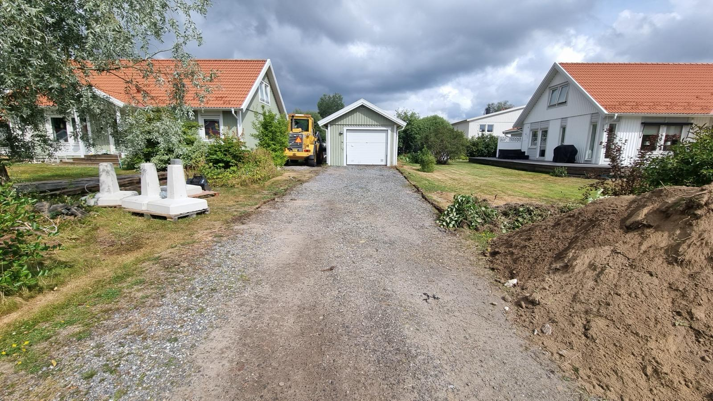
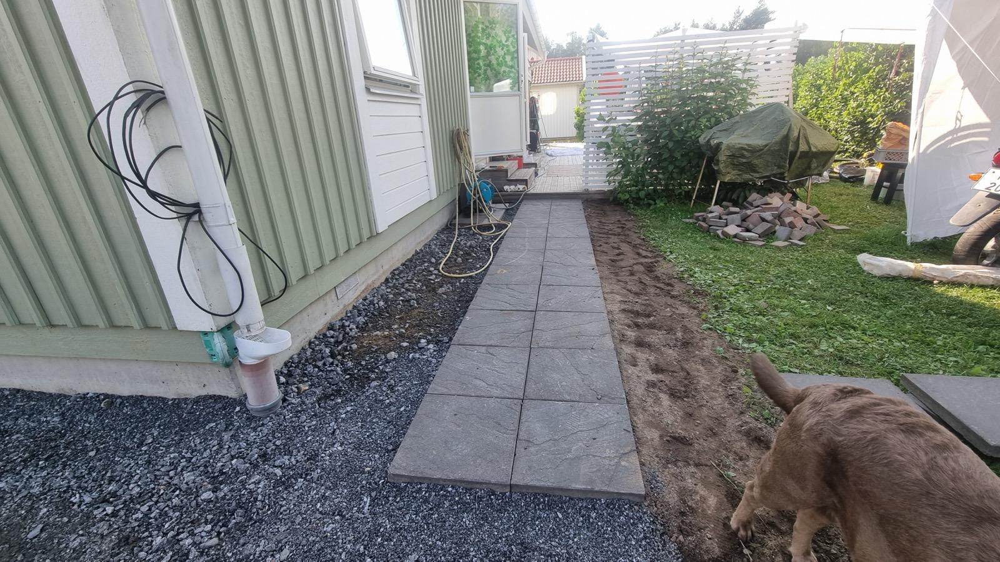
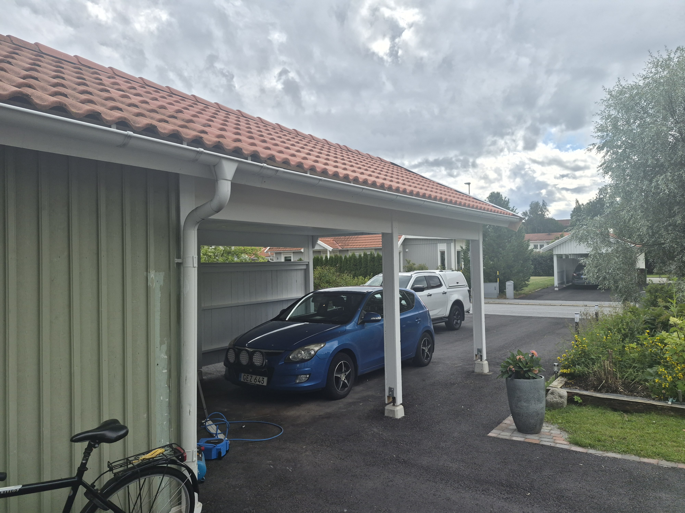

Referensprojekt – Carport på Umedalen
Projektet omfattade bygglovsritningar, markarbeten, uppförande av carport samt färdigställande av uppfart.
PlatsUmedalen, Umeå
ProjektCarport och markarbete
OmfattningBygglovsritningar, markarbete, carport och uppfart
StatusSlutfört
1. Bygglovsritningar

Fasadritning
Byggnadens utformning och fasader.

Bygglovsritning
Underlag för bygglov och fortsatt projektering.

Planritning
Planlösning med mått, rum och funktion.
2. Markarbete

Markförberedelser
Schaktning och hantering av markmassor.

Markjustering
Justering inför plattläggning.

Plattläggning
Plattläggning och beläggning av uppfart när underlaget är klart.
3. Carport

Stomresning
Carportens bärande konstruktion växer fram.

Takläggning
Takstomme och takläggning under arbetets gång.

Belysning
Tak och belysning färdigställt.
4. Färdigt projekt

Färdig carport
Carporten efter färdigställande.

Färdig uppfart
Uppfarten och anpassningar runt carporten.

Färdigt projekt
Överblick av det färdiga projektet.